Here, I load the AVONET data as d, using {tidyverse} read_csv. Next, I winnow my data to keep 19 variables, using {dplyr} select (). I only select variables mentioned in keep and overwrite my original d with the winnowed version. Then, I perform a quick exploratory data analysis on the remaining subset of the data. For that I use skim() in the {skimr} package.
library(tidyverse)
── Attaching core tidyverse packages ──────────────────────── tidyverse 2.0.0 ──
✔ dplyr 1.2.0 ✔ readr 2.1.6
✔ forcats 1.0.1 ✔ stringr 1.6.0
✔ ggplot2 4.0.1 ✔ tibble 3.3.1
✔ lubridate 1.9.4 ✔ tidyr 1.3.2
✔ purrr 1.2.1
── Conflicts ────────────────────────────────────────── tidyverse_conflicts() ──
✖ dplyr::filter() masks stats::filter()
✖ dplyr::lag() masks stats::lag()
ℹ Use the conflicted package (<http://conflicted.r-lib.org/>) to force all conflicts to become errors
f <-"https://raw.githubusercontent.com/difiore/ada-datasets/refs/heads/main/AVONETdataset1.csv"d <-read_csv(f, col_names =TRUE)
Rows: 11009 Columns: 37
── Column specification ────────────────────────────────────────────────────────
Delimiter: ","
chr (13): Species1, Family1, Order1, Avibase.ID1, Mass.Source, Mass.Refs.Oth...
dbl (24): Sequence, Total.individuals, Female, Male, Unknown, Complete.measu...
ℹ Use `spec()` to retrieve the full column specification for this data.
ℹ Specify the column types or set `show_col_types = FALSE` to quiet this message.
Attaching package: 'kableExtra'
The following object is masked from 'package:dplyr':
group_rows
(eda <-skim(d) |>kable())
skim_type
skim_variable
n_missing
complete_rate
character.min
character.max
character.empty
character.n_unique
character.whitespace
numeric.mean
numeric.sd
numeric.p0
numeric.p25
numeric.p50
numeric.p75
numeric.p100
numeric.hist
character
Species1
0
1.0000000
9
36
0
11009
0
NA
NA
NA
NA
NA
NA
NA
NA
character
Family1
0
1.0000000
7
18
0
243
0
NA
NA
NA
NA
NA
NA
NA
NA
character
Order1
0
1.0000000
10
19
0
36
0
NA
NA
NA
NA
NA
NA
NA
NA
character
Habitat
98
0.9910982
4
14
0
11
0
NA
NA
NA
NA
NA
NA
NA
NA
character
Trophic.Level
5
0.9995458
8
9
0
4
0
NA
NA
NA
NA
NA
NA
NA
NA
character
Trophic.Niche
10
0.9990917
8
21
0
10
0
NA
NA
NA
NA
NA
NA
NA
NA
character
Primary.Lifestyle
0
1.0000000
6
11
0
5
0
NA
NA
NA
NA
NA
NA
NA
NA
numeric
Beak.Length_Culmen
0
1.0000000
NA
NA
NA
NA
NA
2.636346e+01
2.438601e+01
4.50
14.700
19.90
2.85000e+01
414.20
▇▁▁▁▁
numeric
Beak.Width
0
1.0000000
NA
NA
NA
NA
NA
6.578545e+00
5.148234e+00
0.70
3.600
5.00
7.70000e+00
88.90
▇▁▁▁▁
numeric
Beak.Depth
0
1.0000000
NA
NA
NA
NA
NA
8.060205e+00
7.585840e+00
1.00
3.800
5.80
9.40000e+00
110.90
▇▁▁▁▁
numeric
Tarsus.Length
0
1.0000000
NA
NA
NA
NA
NA
2.873362e+01
2.484441e+01
2.50
17.400
22.00
3.13000e+01
481.20
▇▁▁▁▁
numeric
Wing.Length
0
1.0000000
NA
NA
NA
NA
NA
1.247826e+02
9.343607e+01
0.10
66.800
91.50
1.45500e+02
789.90
▇▂▁▁▁
numeric
Tail.Length
0
1.0000000
NA
NA
NA
NA
NA
8.665216e+01
6.108081e+01
0.10
50.200
68.70
9.99000e+01
812.80
▇▁▁▁▁
numeric
Mass
0
1.0000000
NA
NA
NA
NA
NA
2.671472e+02
1.883035e+03
1.90
15.000
35.50
1.21000e+02
111000.00
▇▁▁▁▁
numeric
Migration
23
0.9979108
NA
NA
NA
NA
NA
1.288367e+00
6.202803e-01
1.00
1.000
1.00
1.00000e+00
3.00
▇▁▁▁▁
numeric
Min.Latitude
57
0.9948224
NA
NA
NA
NA
NA
-6.439430e+00
2.236939e+01
-85.58
-21.215
-7.15
8.07000e+00
68.08
▁▃▇▃▁
numeric
Max.Latitude
57
0.9948224
NA
NA
NA
NA
NA
1.150653e+01
2.331511e+01
-65.12
-3.330
9.00
2.20675e+01
85.01
▁▃▇▂▁
numeric
Centroid.Latitude
57
0.9948224
NA
NA
NA
NA
NA
2.948827e+00
2.206951e+01
-71.04
-9.725
-0.22
1.52800e+01
78.43
▁▃▇▂▁
numeric
Range.Size
57
0.9948224
NA
NA
NA
NA
NA
2.578859e+06
7.629310e+06
0.88
54052.868
416076.61
2.18704e+06
136304432.20
▇▁▁▁▁
“Species1”, “Family1”, “Order1”, “Habitat”, “Trophic.Level”, “Trophic.Niche” and “Primary.Lifestyle” are categorical. All the rest variables are numeric.
CHALLENGE 1: One-Factor ANOVA and Inference
STEP 1
I transform Migration from numeric to factor. I also over-write my d and by dropping NAs in Trophic.Level andMigration. I use {ggplot} to visualize boxplots of log(Mass) by Trophic.Level and by Migration.
d <- d |>mutate(Migration =as.factor(Migration))d <- d|>drop_na(Trophic.Level, Migration)p1 <- d |>ggplot(aes(x = Trophic.Level, y =log(Mass))) +geom_boxplot() +geom_jitter(alpha =0.1)p1
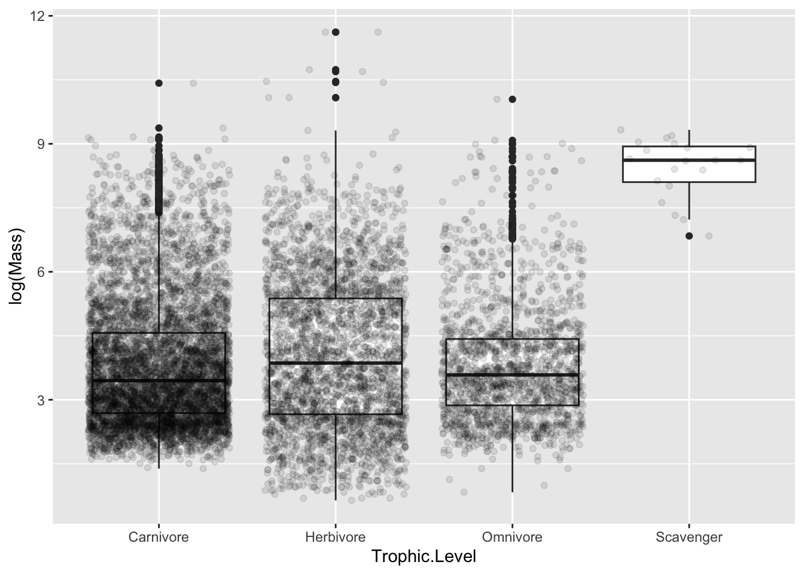
p2 <- d |>ggplot(aes(x = Migration, y =log(Mass))) +geom_boxplot() +geom_jitter(alpha =0.1)p2
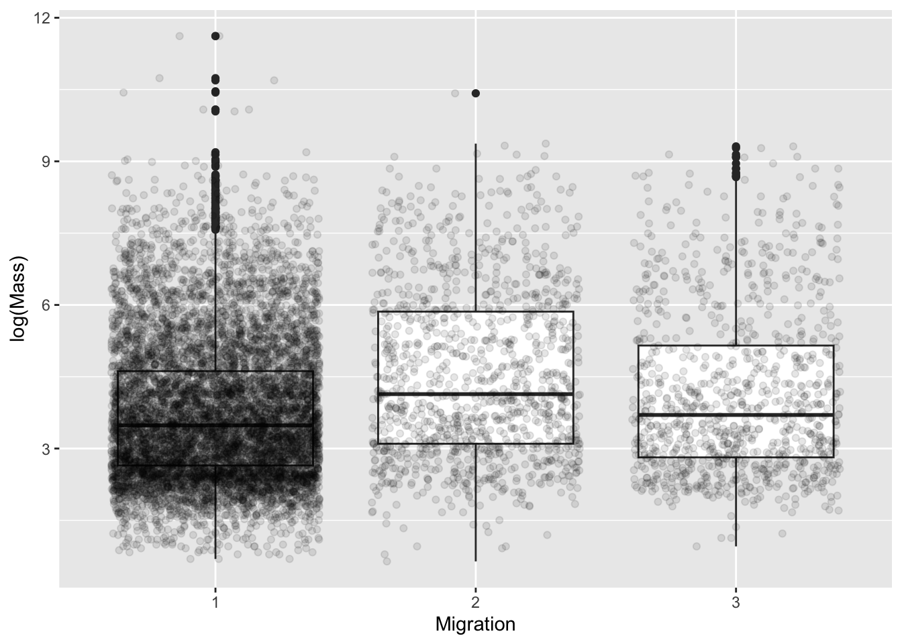
STEP 2
Next, I fit two one-factor linear models: log(Mass) ~ Trophic.Level and log(Mass) ~ Migration, using {stats} lm() function.
m1 <-lm(log(Mass) ~ Trophic.Level, data = d)summary(m1)
Call:
lm(formula = log(Mass) ~ Trophic.Level, data = d)
Residuals:
Min 1Q Median 3Q Max
-3.4230 -1.1559 -0.3047 0.9004 7.5525
Coefficients:
Estimate Std. Error t value Pr(>|t|)
(Intercept) 3.80916 0.01970 193.354 < 2e-16 ***
Trophic.LevelHerbivore 0.25566 0.03410 7.498 6.96e-14 ***
Trophic.LevelOmnivore 0.01410 0.04122 0.342 0.732
Trophic.LevelScavenger 4.63107 0.34467 13.436 < 2e-16 ***
---
Signif. codes: 0 '***' 0.001 '**' 0.01 '*' 0.05 '.' 0.1 ' ' 1
Residual standard error: 1.539 on 10982 degrees of freedom
Multiple R-squared: 0.02091, Adjusted R-squared: 0.02064
F-statistic: 78.18 on 3 and 10982 DF, p-value: < 2.2e-16
m2 <-lm(log(Mass) ~ Migration, data = d)summary(m2)
Call:
lm(formula = log(Mass) ~ Migration, data = d)
Residuals:
Min 1Q Median 3Q Max
-3.8924 -1.1769 -0.3088 0.9152 7.8427
Coefficients:
Estimate Std. Error t value Pr(>|t|)
(Intercept) 3.77457 0.01636 230.710 < 2e-16 ***
Migration2 0.75971 0.04731 16.059 < 2e-16 ***
Migration3 0.37647 0.05155 7.303 3.02e-13 ***
---
Signif. codes: 0 '***' 0.001 '**' 0.01 '*' 0.05 '.' 0.1 ' ' 1
Residual standard error: 1.535 on 10983 degrees of freedom
Multiple R-squared: 0.02563, Adjusted R-squared: 0.02546
F-statistic: 144.5 on 2 and 10983 DF, p-value: < 2.2e-16
?lm()
In the Trophic.level model, F = 78.18, while in the Migration model F = 144.5 . In both models, the F-statistics are highly significant. I can reject the null hypothesis. So log(Mass) is associated with Trophic.level and Migration.
In the Migration model, Migration category 1 is the reference. Both Migration 2 (p < 2e-16) and Migration 3 (p = 3.02e-13) categories differ significantly from Migration 1.
Releveling Migration to use Migration 2 as the reference
Using Migration category 1 as the reference did not allow for a pairwise comparison between Migration 2 and Migration 3. Here, I relevel() the reference to Migration 2, which allows Migration 2 and 3 categories to be compared.
d$Migration <-relevel(d$Migration, ref ="2")m3 <-lm(log(Mass) ~ Migration, data = d)summary(m3)
Call:
lm(formula = log(Mass) ~ Migration, data = d)
Residuals:
Min 1Q Median 3Q Max
-3.8924 -1.1769 -0.3088 0.9152 7.8427
Coefficients:
Estimate Std. Error t value Pr(>|t|)
(Intercept) 4.53428 0.04439 102.149 < 2e-16 ***
Migration1 -0.75971 0.04731 -16.059 < 2e-16 ***
Migration3 -0.38324 0.06603 -5.804 6.67e-09 ***
---
Signif. codes: 0 '***' 0.001 '**' 0.01 '*' 0.05 '.' 0.1 ' ' 1
Residual standard error: 1.535 on 10983 degrees of freedom
Multiple R-squared: 0.02563, Adjusted R-squared: 0.02546
F-statistic: 144.5 on 2 and 10983 DF, p-value: < 2.2e-16
The Migration category 3 (p = 6.67e-09) also differs significantly from Migration 2. Hence, all Migration categories differ significantly in log(Mass).
STEP 3
To evaluate pairwise differences among migration categories more formally, I conduct a post-hoc Tukey Honest Significant Differences test. Before that, I model log(Mass) ~ Migration again using {stats} aov(), which I needed for the TukeyHSD().
Tukey multiple comparisons of means
95% family-wise confidence level
factor levels have been ordered
Fit: aov(formula = log(Mass) ~ Migration, data = d)
$Migration
diff lwr upr p adj
3-1 0.3764693 0.2556282 0.4973105 0
2-1 0.7597067 0.6488157 0.8705977 0
2-3 0.3832374 0.2284536 0.5380211 0
?aov()
The post-hoc Tukey Honest Significant Differences test also confirms that all Migration categories are significantly different from one another.
STEP 4
I use a permutation test to generate a null distribution of F statistics for the model of log(Mass) as a function of Trophic.Level. For each permutation, I randomly shuffle [sample()] the values of Trophic.Level, refit the model [lm()] and store the resulting F statistic in permuted_F, which I precreate before the permutation using vector(). I then compare the observed F statistic from the original model to this permuted null distribution. I calculate permuted p-value.
library(broom)nperm <-1000permuted_F <-vector(length = nperm)for (i in1:nperm) { d_perm <- d d_perm$Trophic.Level <-sample(d_perm$Trophic.Level) perm_m <-lm(log(Mass) ~ Trophic.Level, data = d_perm) permuted_F[i] <-glance(perm_m)$statistic}hist(permuted_F)
Challenge 2: Data Wrangling plus One- and Two-Factor ANOVA
STEP 1
Next, I create relative beak length and relative Tarsus size based on log(Mass) as the linear model residuals, obtained from the lm() function. I use the {dplyr} mutate to include these residuals, relBeak and relTarsus, to my dataset d.
relBeak <-lm(log(Beak.Length_Culmen) ~log(Mass), data = d)relTarsus <-lm(log(Tarsus.Length) ~log(Mass), data = d)d <- d |>mutate(relBeak = relBeak$residuals,relTarsus = relTarsus$residuals)d
Here, I drop NAs for Primary.Lifestyle and Trophic.Niche using drop_na(). I visualize relative tarsus length by Primary.Lifestyle and relative beak length by Trophic.Niche using violin plots in {ggplot}.
p3 <- d |>drop_na(Primary.Lifestyle) |>ggplot(aes(x = Primary.Lifestyle, y = relTarsus)) +geom_violin()+theme(axis.text.x =element_text(angle =45, hjust =1))p3
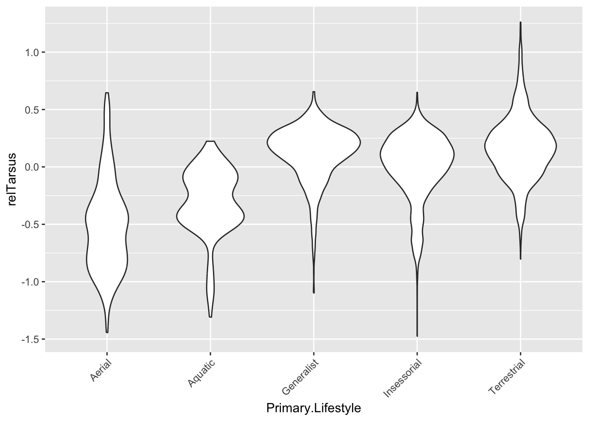
p4 <- d |>drop_na(Trophic.Niche) |>ggplot(aes(x = Trophic.Niche, y = relBeak)) +geom_violin()+theme(axis.text.x =element_text(angle =45, hjust =1))p4
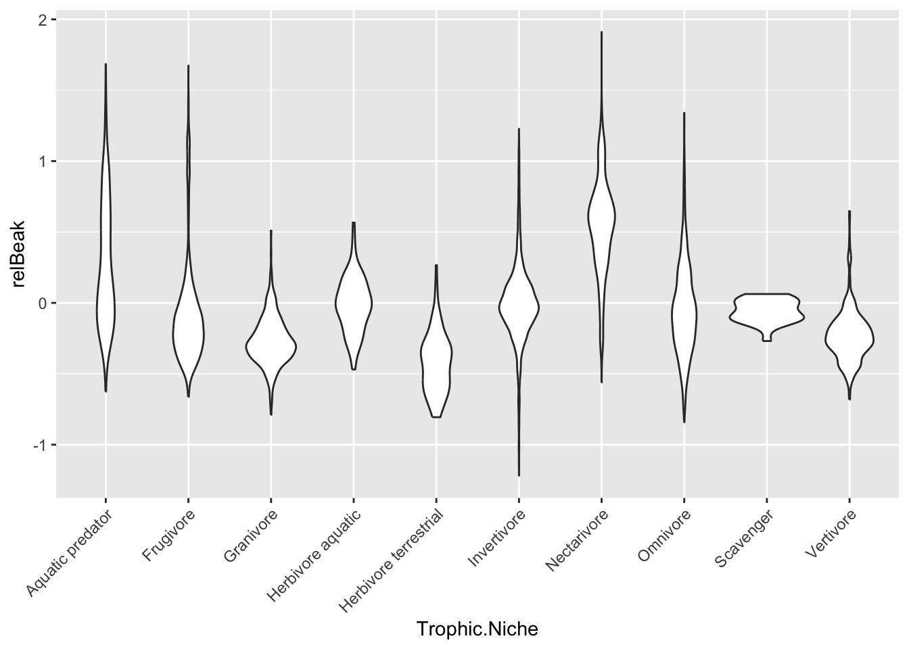
STEP 3
Prior to this step, I dropped NAs inside the Migration variable during the Challenge 1. Here, I drop NAs for Range.Size as well. After observing the histogram for Range.Size, I decide to transform Range.Size to log(Range.Size) and create a new variable called logRange.Size via mutate(). Histogram for the logRange.Size looks much better, so I proceed forward and fit the linear model for logRange.Size ~ Migration.
## already dropped NAs in Migration in the Step 1 of the Challenge 1 d <- d |>drop_na(Range.Size)hist(d$Range.Size)
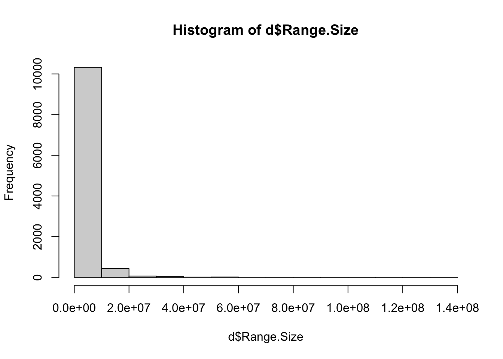
d <- d |>mutate(logRange.Size =log(Range.Size))hist(d$logRange.Size)
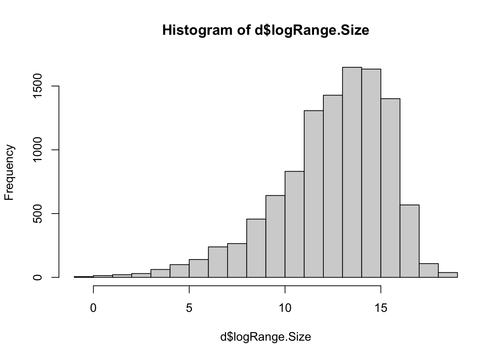
m4 <-lm(logRange.Size ~ Migration, data = d)summary(m4)
Call:
lm(formula = logRange.Size ~ Migration, data = d)
Residuals:
Min 1Q Median 3Q Max
-14.5710 -1.4521 0.4357 1.9763 5.9271
Coefficients:
Estimate Std. Error t value Pr(>|t|)
(Intercept) 13.81850 0.08076 171.099 < 2e-16 ***
Migration1 -1.78469 0.08606 -20.737 < 2e-16 ***
Migration3 0.73233 0.12015 6.095 1.13e-09 ***
---
Signif. codes: 0 '***' 0.001 '**' 0.01 '*' 0.05 '.' 0.1 ' ' 1
Residual standard error: 2.785 on 10934 degrees of freedom
Multiple R-squared: 0.0869, Adjusted R-squared: 0.08674
F-statistic: 520.3 on 2 and 10934 DF, p-value: < 2.2e-16
Based on the global model (p< 2.2e-16), range size is significantly associated with migration form. Based on multiple R^2 or adjusted R^2, 8.69% and 8.67 % of variance, respectively, are associated with Migration behavior style.
Based on the releveling I did in the Step 2 of the Challenge 1, my reference in this model is Migration 2 category. Here, Migration 1 (p < 2e-16) and Migration 3 (p = 1.13e-09) are compared to Migration 2. Both Migration 1 and 3 categories differ significantly from Migration 2.
Relevel Migration 2 to Migration 1
Here, I relevel my reference from Migration 2 to Migration 1. I use the relevel() function. This allows the direct comparison between Migration 1 and 3 categories. Then, I rerun the model again using the same lm() and its arguments, like in the model before the releveling. I also run the post-hoc Tukey Honest Significant Differences test.
d$Migration <-relevel(d$Migration, ref ="1")m5 <-lm(logRange.Size ~ Migration, data = d)summary(m5)
Call:
lm(formula = logRange.Size ~ Migration, data = d)
Residuals:
Min 1Q Median 3Q Max
-14.5710 -1.4521 0.4357 1.9763 5.9271
Coefficients:
Estimate Std. Error t value Pr(>|t|)
(Intercept) 12.03381 0.02974 404.62 <2e-16 ***
Migration2 1.78469 0.08606 20.74 <2e-16 ***
Migration3 2.51702 0.09380 26.83 <2e-16 ***
---
Signif. codes: 0 '***' 0.001 '**' 0.01 '*' 0.05 '.' 0.1 ' ' 1
Residual standard error: 2.785 on 10934 degrees of freedom
Multiple R-squared: 0.0869, Adjusted R-squared: 0.08674
F-statistic: 520.3 on 2 and 10934 DF, p-value: < 2.2e-16
r_aov <-aov(logRange.Size ~ Migration, data = d)(posthoc2 <-TukeyHSD(r_aov, which ="Migration", ordered =TRUE, conf.level =0.95))
Tukey multiple comparisons of means
95% family-wise confidence level
factor levels have been ordered
Fit: aov(formula = logRange.Size ~ Migration, data = d)
$Migration
diff lwr upr p adj
2-1 1.7846901 1.582952 1.986428 0
3-1 2.5170168 2.297150 2.736883 0
3-2 0.7323266 0.450689 1.013964 0
Migration 1 and 3 categories differ significantly. Moreover, based on the post-hoc Tukey HSD results, all Migration categories are reconfirmed to be significantly different from one another.
STEP 4
I filter my dataset d to the order “Passeriformes”. By fitting the lm() model, I examine the relationship between relative beak length and two ecological variables: Primary.Lifestyle and Trophic.Level. I create boxplots of relative beak length by each predictor and by their combination using {ggplot}.
d <- d |>filter(Order1 =="Passeriformes") ## lifestyle(p5 <- d |>ggplot(aes(x = Primary.Lifestyle, y = relBeak)) +geom_boxplot() +geom_jitter(alpha =0.1))
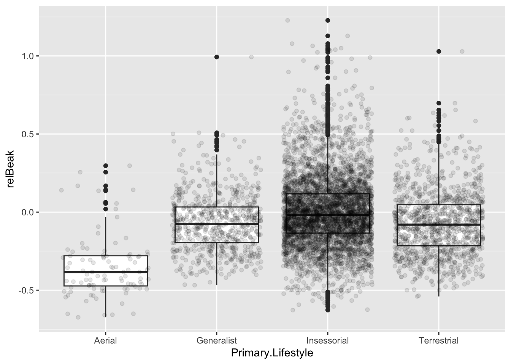
## trophic level(p6 <- d |>ggplot(aes(x = Trophic.Level, y = relBeak)) +geom_boxplot() +geom_jitter(alpha =0.1))
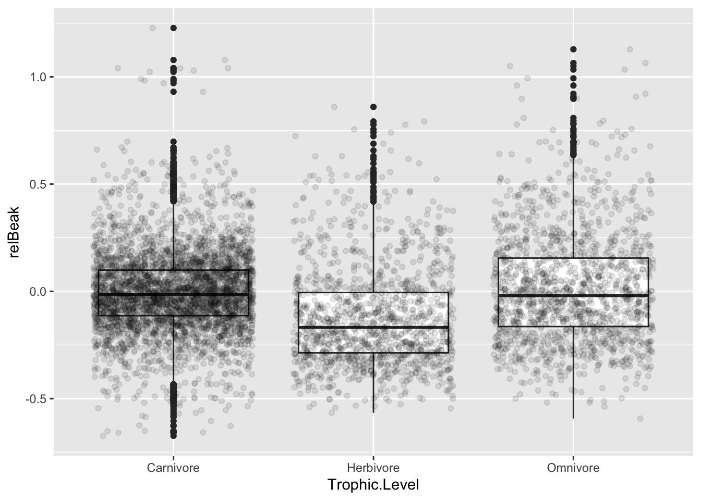
## lifestyle + trophic leveld <- d |>mutate(lifestyle_trophic =paste(Primary.Lifestyle, Trophic.Level, sep =" : "))p6a <- d |>ggplot(aes(x = lifestyle_trophic, y = relBeak)) +geom_boxplot() +geom_jitter(alpha =0.1) +theme(axis.text.x =element_text(angle =45, hjust =1))p6a
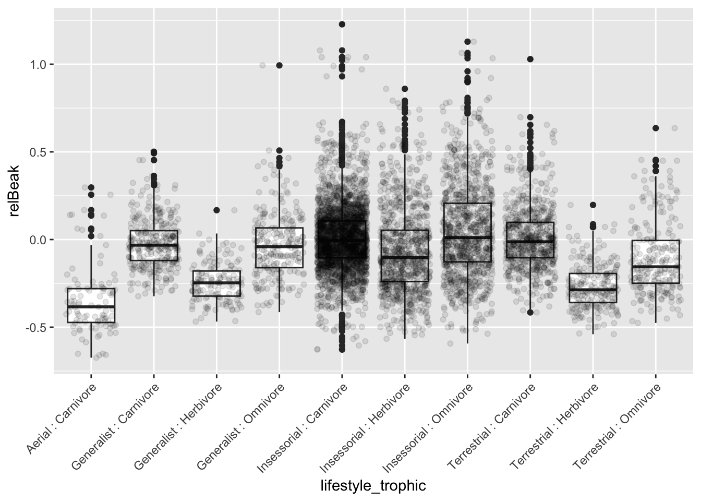
I then fit separate linear models for each predictor.
m6 <-lm(relBeak ~ Primary.Lifestyle, data = d)summary(m6)
Call:
lm(formula = relBeak ~ Primary.Lifestyle, data = d)
Residuals:
Min 1Q Median 3Q Max
-0.63002 -0.13751 -0.01692 0.11193 1.22533
Coefficients:
Estimate Std. Error t value Pr(>|t|)
(Intercept) -0.34896 0.02159 -16.16 <2e-16 ***
Primary.LifestyleGeneralist 0.27893 0.02307 12.09 <2e-16 ***
Primary.LifestyleInsessorial 0.35129 0.02182 16.10 <2e-16 ***
Primary.LifestyleTerrestrial 0.27849 0.02249 12.38 <2e-16 ***
---
Signif. codes: 0 '***' 0.001 '**' 0.01 '*' 0.05 '.' 0.1 ' ' 1
Residual standard error: 0.2148 on 6579 degrees of freedom
Multiple R-squared: 0.05495, Adjusted R-squared: 0.05452
F-statistic: 127.5 on 3 and 6579 DF, p-value: < 2.2e-16
m7 <-lm(relBeak ~ Trophic.Level, data = d)summary(m7)
Call:
lm(formula = relBeak ~ Trophic.Level, data = d)
Residuals:
Min 1Q Median 3Q Max
-0.66978 -0.13641 -0.02055 0.11128 1.23177
Coefficients:
Estimate Std. Error t value Pr(>|t|)
(Intercept) -0.004112 0.003491 -1.178 0.2389
Trophic.LevelHerbivore -0.118259 0.006933 -17.057 <2e-16 ***
Trophic.LevelOmnivore 0.016848 0.006593 2.555 0.0106 *
---
Signif. codes: 0 '***' 0.001 '**' 0.01 '*' 0.05 '.' 0.1 ' ' 1
Residual standard error: 0.2154 on 6580 degrees of freedom
Multiple R-squared: 0.04986, Adjusted R-squared: 0.04957
F-statistic: 172.6 on 2 and 6580 DF, p-value: < 2.2e-16
STEP 5
I then fit a two-factor additive model including both Primary.Lifestyle and Trophic.Level as predictors of relative beak length. For this I use aov(). The “+” makes it a two factor model.
## two way anovam8 <-aov(relBeak ~ Primary.Lifestyle + Trophic.Level, data = d)m8
Call:
aov(formula = relBeak ~ Primary.Lifestyle + Trophic.Level, data = d)
Terms:
Primary.Lifestyle Trophic.Level Residuals
Sum of Squares 17.65593 17.36564 286.26667
Deg. of Freedom 3 2 6577
Residual standard error: 0.2086275
Estimated effects may be unbalanced
The output shows substantial sums of squares for both predictors, indicating that both variables explain variation in relative beak length when included together. This suggests that relative beak length is related to both lifestyle and trophic level.
STEP 6
I next fit a two-factor model with an interaction term between Primary.Lifestyle and Trophic.Level.
Call:
aov(formula = relBeak ~ Primary.Lifestyle + Trophic.Level + Primary.Lifestyle:Trophic.Level,
data = d)
Terms:
Primary.Lifestyle Trophic.Level Primary.Lifestyle:Trophic.Level
Sum of Squares 17.65593 17.36564 8.49762
Deg. of Freedom 3 2 4
Residuals
Sum of Squares 277.76905
Deg. of Freedom 6573
Residual standard error: 0.2055702
2 out of 12 effects not estimable
Estimated effects may be unbalanced
The interaction term has a smaller sum of squares than either main effect, suggesting that the interaction exists but is weaker than the additive effects of the two predictors.
STEP 7
To visualize the interaction, I use emmip() in the {emmeans} package with the fitted interaction model (*), using {stats} aov(). The plotting function returned warnings because two combinations were missing from the dataset, so some predicted points could not be plotted.. womp-womp
m10 <-aov(relBeak ~ Primary.Lifestyle * Trophic.Level, data = d)library(emmeans)
Welcome to emmeans.
Caution: You lose important information if you filter this package's results.
See '? untidy'
Warning: Removed 2 rows containing missing values or values outside the scale range
(`geom_point()`).
Warning: Removed 2 rows containing missing values or values outside the scale range
(`geom_line()`).
Warning: Removed 2 rows containing missing values or values outside the scale range
(`geom_segment()`).
Warning: Removed 2 rows containing missing values or values outside the scale range
(`geom_point()`).
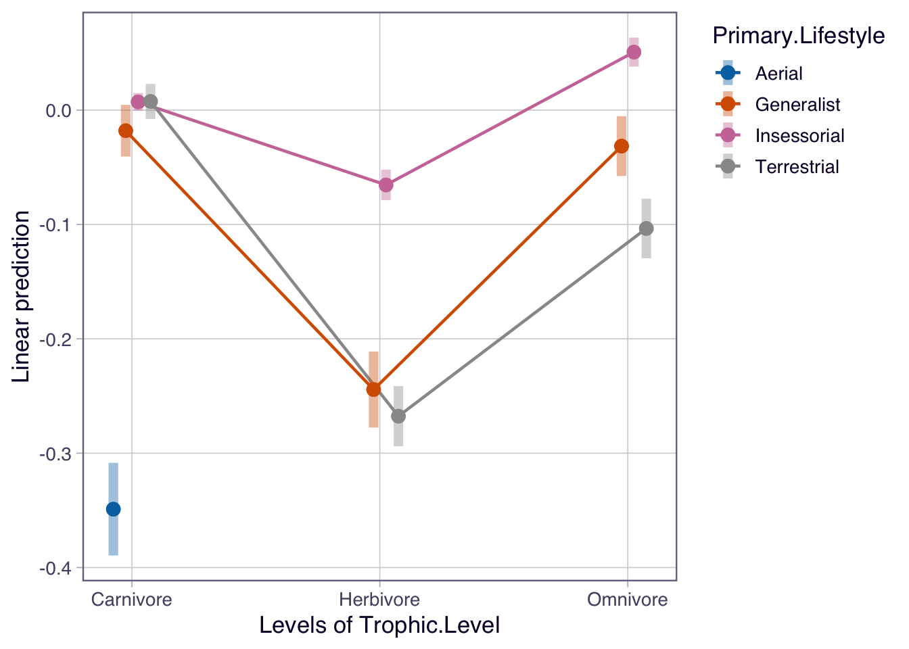
STEP 8
Finally, I assess whether the assumptions of ANOVA and linear regression were reasonably met for the summarized [summarise()] data grouped by [group_by()] Trophic.Level and Primary.Lifestyle. The summary includes both sample sizes and variances for each grouping. To check equality of variances, I compare the largest and smallest within-group standard deviations for Trophic.Level and Primary.Lifestyle.
d_trophic <- d |>group_by(Trophic.Level) |>summarise(n =n(), sd_relBeak =sd(relBeak, na.rm =TRUE))d_trophic
In both cases, the ratio is less than 2, these variances are roughly equal. From observing the summary, group sample sizes are not roughly equal. This imbalance is especially strong for Primary.Lifestyle, where sample sizes range from 99 to 4618. Sample sizes for Trophic.Level are also unequal, ranging from 1293 to 3807. So the assumption of variance equality is met, but the assumption of sample size equality is not.
Visual checks
For the visual checks, I plot histograms and qq-plots in {ggplot} for the observations in the Trophic.level (m7) and Primary.Lifestyle (m6) models.
I create trophic_residual variable to store the residuals of my m7 and m6 models, relBeak ~ Trophic.Level and relBeak ~ Primary.Lifestyle, respectively. I check these residuals for normality using qq-plots and histogram in the {ggplot} package again.
## residual normality for relBeak ~ Trophic.Level (m7)d <- d |>mutate(trophic_residual =residuals(m7))(qq3 <-ggplot(d, aes(sample = trophic_residual)) +stat_qq() +stat_qq_line() +facet_wrap(~ Trophic.Level))
`stat_bin()` using `bins = 30`. Pick better value `binwidth`.
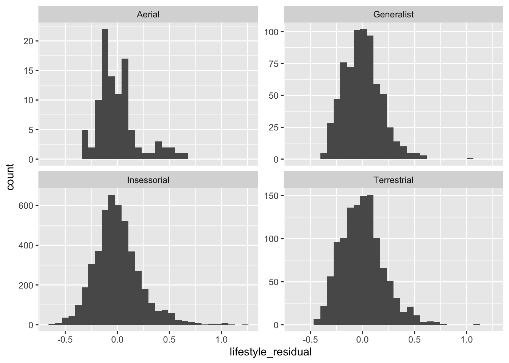
Visual inspection of histograms and qq-plots suggest that the distributions of observations are approximately normal in the center but show tail deviations. The residual QQ plots show similar deviations from normality. Generally, histograms are very-very roughly normally distributed, yet mostly slightly skewed based on observations and residuals.
Thus, the equal-variance assumption seems acceptable, but the assumptions of equal sample size and perfect normality are not fully met. The ANOVA results are still informative, but they should be interpreted with some caution.